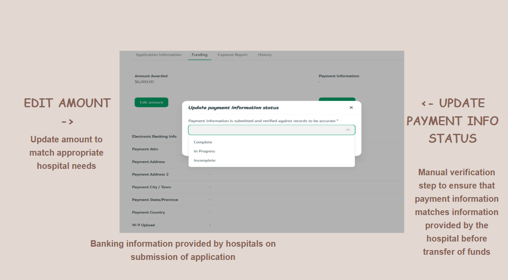

Market Expansion Strategy for Local Startup
Conducted comprehensive market research and competitive analysis to identify expansion opportunities for a local tech startup. Developed data-driven recommendations that resulted in a 25% increase in target market reach and strategic partnership opportunities.